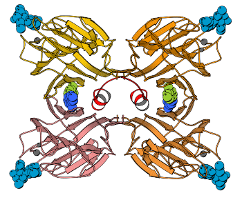
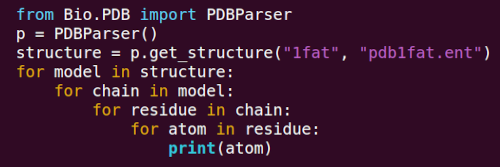
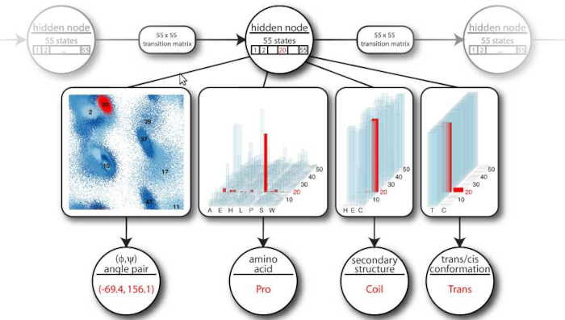
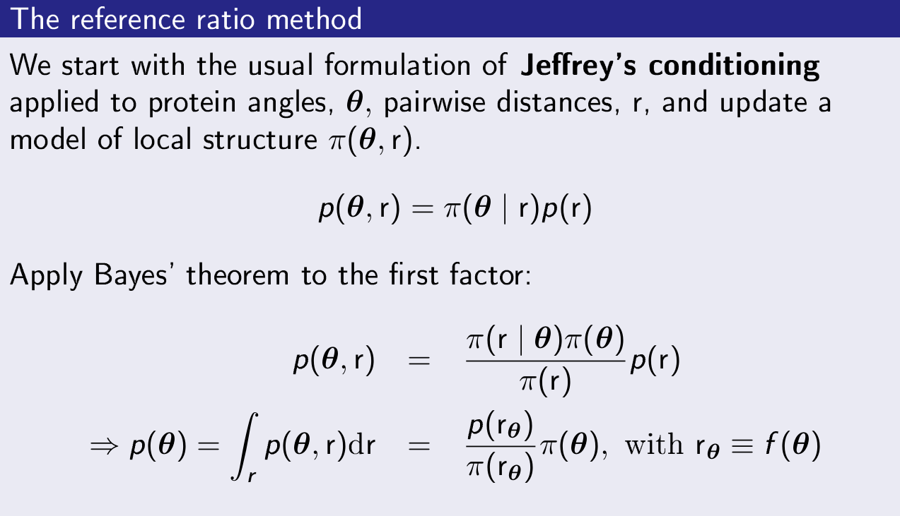
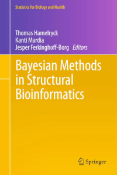
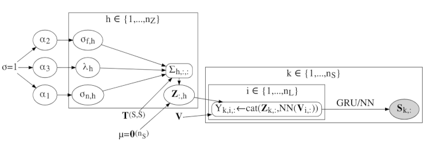

Below is an outline of my research over the years and some key publications.
For a full list of references, see
Google Scholar.
Picture: points sampled from the bivariate von Mises distribution on the torus.
This distribution belongs to directional statistics - a branch of statistics that deals
with non-Euclidean data, such as for example dihedral angles in biomolecules.
Structural biology
I did my PhD at the Free University of Brussels (VUB), Belgium on
the structural biology (using X-ray crystallography) of proteins that
bind complex sugars (lectins), using
the legume lectin family as a model system. Here are some of the key papers from that period. They
shed light on how lectins distinguish between highly similar complex sugars, on the interplay between
sugar binding and the quaternary structure of proteins, and on the structure of a plant-defense protein
related to the legume lectins, called arcelin-5. The review that appeared in BBA in 1998 is still a
widely-read paper on the subject.
- Hamelryck, T., Dao-Thi, MH., Poortmans, F., Chrispeels, MJ., Wyns, L., Loris, R. (1996).
The crystallographic structure of phytohemagglutinin-L.
Journal of Biological Chemistry, 271(34), 20479–20485.
- Hamelryck, T., Poortmans, F., Goossens, A., Angenon, G., Van Montagu, M., Wyns, L., Loris, R. (1996).
Crystal structure of Arcelin-5, a lectin-like defence protein from the seeds of Phaseolus vulgaris.
J. Biol. Chem., 271, 32796-32802.
-
Loris, R., Hamelryck, T., Bouckaert, J., & Wyns, L. (1998).
Legume lectin structure.
Biochimica et Biophysica Acta (BBA) - Protein Structure and Molecular Enzymology, 1383(1), 9–36.
-
Hamelryck, T., Loris, R., Bouckaert, J., Dao-Thi, MH., Strecker, G., Imberty, A., Fernandez, E., Wyns, L., Etzler, ME. (1999).
Carbohydrate binding, quaternary structure and a novel hydrophobic binding site in two legume lectin oligomers from Dolichos biflorus.
Journal of Molecular Biology, 286(4), 1161–1177.
-
Hamelryck, T. W., Moore, J. G., Chrispeels, M. J., Loris, R., & Wyns, L. (2000).
The role of weak protein-protein interactions in multivalent lectin-carbohydrate binding: crystal structure of cross-linked FRIL.
Journal of Molecular Biology, 299(4), 875–883

Structural bioinformatics
After my PhD in protein X-ray crystallography, I turned to structural bioinformatics.
The Proteins (2005) article was my first publication in the field: a new way to look at
solvent exposure, based on the surprising
observation that the environment around the side chain of an amino acid differs radically from its opposite side with respect to the distribition of the number of neighbors. The result,
Half Sphere Exposure (HSE), is now an established method to quantify solvent exposure of an amino acid, next to
contact number and accessible surface area. I also developed
Biopython's Bio.PDB library
- still one of the standard tools to extract data from PDB files.
- Hamelryck, T. (2005).
An amino acid has two sides: a new 2D measure provides a different view of solvent exposure.
Proteins: Structure, Function, and Bioinformatics, 59(1), 38–48.
- Hamelryck, T., Manderick, B. (2003).
PDB file parser and structure class implemented in Python.
Bioinformatics, 19(17), 2308–2310.
- Cock, P. J., Antao, T., Chang, J. T., Chapman, B. A., Cox, C. J., Dalke, A., Friedberg, I., Hamelryck, T., Kauff, F.,
Wilczynski, B., and others. (2009).
Biopython: freely available Python tools for computational molecular biology and bioinformatics.
Bioinformatics, 25(11), 1422–1423.

Statistical structural bioinformatics
Combining
Bayesian networks and directional statistics, I worked on formulating
proper probabilistic models
of protein and RNA structure. This work is still relevant for moving beyond point predictions obtained from
non-probabilistic deep network heuristics, I think. Much of this work has been done with my two close collaborators
at the University of Leeds,
Prof. Kanti KV. Mardia
and
Prof. John T. Kent,
and my former PhD student (now professor)
Wouter Boomsma.
The evolutionary model published in 2017 was developed together with
Prof. Jotun Hein, University of Oxford and his PhD student Michael Golden.
- Hamelryck, T., Kent, JT., Krogh, A. (2006).
Sampling realistic protein conformations using local structural bias.
PLoS Computational Biology, 2: e131.
- Boomsma, W., Mardia, KV., Taylor, CC., Ferkinghoff-Borg, J., Krogh, A., Hamelryck, T. (2008).
A generative, probabilistic model of local protein structure.
Proceedings of the National Academy of Sciences, 105(26), 8932–8937.
- Frellsen, J., Moltke, I., Thiim, M., Mardia, K. V., Ferkinghoff-Borg, J., Hamelryck, T. (2009).
A probabilistic model of RNA conformational space.
PLoS Computational Biology, 5(6), e1000406.
- Harder, T., Boomsma, W., Paluszewski, M., Frellsen, J., Johansson, K. E., Hamelryck, T. (2010).
Beyond rotamers: a generative, probabilistic model of side chains in proteins.
BMC Bioinformatics, 11(1), 1–13.
- Hamelryck, T., Mardia, KV., Ferkinghoff-Borg, J., Editors. (2012)
Bayesian methods in structural bioinformatics.
Book in the Springer series "Statistics for biology and health",
385 pages, 13 chapters. Springer Verlag, March, 2012
- Golden, M., Garcı́a-Portugués, E., Sørensen, M., Mardia, K. V., Hamelryck, T., Hein, J. (2017).
A generative angular model of protein structure evolution.
Molecular Biology and Evolution, 34(8), 2085–2100.

Sippl-type "potentials of mean force" are widely used in simulation of protein folding (AlphaFold1
made use of them, for example). These
potentials are typically justified by analogy with the (well-defined) potentials of mean force
used in the physics of liquids. This is incorrect. We showed that these potentials are actually
an application of Jeffrey's conditioning, a special form of Bayesian updating. This led
to the formulation of the reference ratio method, which can be used to update probabilistic models
of local protein structure using nonlocal models (for example, on pairwise distances). This is a fine
piece of probabilistic reasoning with many potential applications. We applied this method to
probabilistic modelling of structure ensembles of felxible proteins.
- Hamelryck, T., Borg, M., Paluszewski, M., Paulsen, J., Frellsen, J., Andreetta, C., Boomsma, W., Bottaro, S., Ferkinghoff-Borg, J. (2010).
Potentials of mean force for protein structure prediction vindicated, formalized and generalized.
PloS One, 5(11), e13714.
- Olsson, S., Frellsen, J., Boomsma, W., Mardia, KV., Hamelryck, T. (2013)
Inference of structure ensembles of flexible biomolecules from sparse, averaged data.
PLoS ONE. 8(11): e79439.
- Valentin, J. B., Andreetta, C., Boomsma, W., Bottaro, S., Ferkinghoff-Borg, J., Frellsen, J., Mardia, K. V., Tian, P., Hamelryck, T. (2014).
Formulation of probabilistic models of protein structure in atomic detail using the reference ratio method.
Proteins: Structure, Function, and Bioinformatics, 82(2), 288–299.

I also edited a book on the topic of Bayesian methods in structural biology for Springer's "Statistics for biology and health" series.

Deep probabilistic programming
Deep probabilistic programming combines the modelling scope of deep learning with the principled treatment of uncertainty
of Bayesian statistics. My group has applied this new paradigm in machine learning to
Bayesian protein structure superposition,
a deep generative model of local protein structure (used in
vaccine design), and the
reconstruction of ancestral
protein sequences.
The latter makes use of a deep model of protein evolution based on an
Ornstein-Uhlenbeck process on a phylogenetic tree (see
figure below). The model can be interpreted as an ensemble of variational autoencoders whose latent variables diffuse on
a phylogenetic tree.
Deep probabilistic programming and its applications is the current focus of my research group.
- Moreta, LS., Al-Sibahi, AS., Theobald, D., Bullock, W., Rommes, BN., Manoukian, A., Hamelryck, T. (2019)
A probabilistic programming approach to protein structure superposition.
16th IEEE International Conference on Computational Intelligence in Bioinformatics and Computational Biology (CIBCB), July 9-11, 2019 – Certosa di Pontignano, Siena - Tuscany, Italy.
- Thygesen, CB., Al-Sibahi, AS., Steenmanns, CS., Moreta, LS., Sørensen, AB., Hamelryck, T. (2021)
Efficient generative modelling of protein structure fragments using a Deep Markov Model.
38th International Conference on Machine Learning (ICML), 139, 10258-10267
- Moreta, LS., Rønning, O., Al-Sibahi, AS., Hein, J., Theobald, D., Hamelryck, T.
Ancestral protein sequence reconstruction using a tree-structured Ornstein-Uhlenbeck variational autoencoder. (2022)
ICLR 2022: The Tenth International Conference on Learning Representations.
